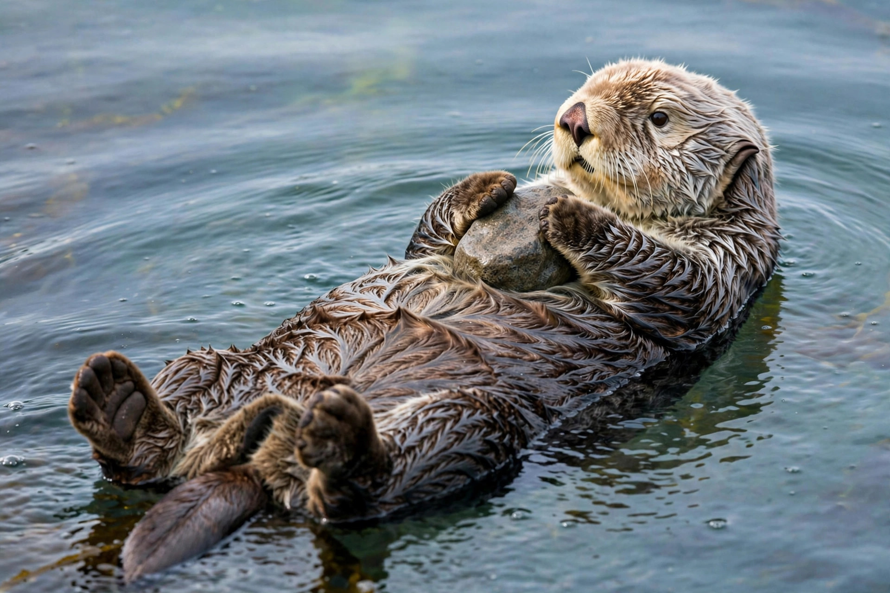

| Scientific name | Enhydra lutris |
|---|---|
| Family | Mustelidae |
| Mass | 14–45 kg |
| Range | North Pacific Ocean |
| Conservation | Endangered (IUCN) |
The sea otter (Enhydra lutris) is a marine mammal native to the coasts of the northern and eastern Pacific Ocean. Adult sea otters typically weigh between 14 and 45 kg (30 and 100 lb), making them the heaviest members of the weasel family but among the smallest marine mammals. Unlike most marine mammals, sea otters have no insulating blubber; instead they rely on exceptionally thick fur — the densest of any animal, with up to about a million hairs per square inch of skin.
Sea otters spend much of their time foraging for sea urchins, abalone, crabs, mussels and other invertebrates, often floating on their backs at the surface while eating. They are among the few mammals known to use tools, employing a rock as an anvil on the chest to smash open hard-shelled prey, and storing tools and food in a loose pouch of skin under each foreleg. Because they prey on sea urchins, which otherwise overgraze kelp, sea otters are a classic keystone species: their presence maintains kelp forest ecosystems.
Between 1741 and 1911 the maritime fur trade hunted sea otters close to extinction, reducing a population of perhaps 300,000 to around 1,000–2,000 animals. Protected by treaty in 1911 and later by the US Marine Mammal Protection Act and Endangered Species Act, populations have partially recovered through conservation and reintroduction, though they remain endangered, threatened by oil spills, disease and predation. Three subspecies are recognised: the Asian, northern and southern sea otters.